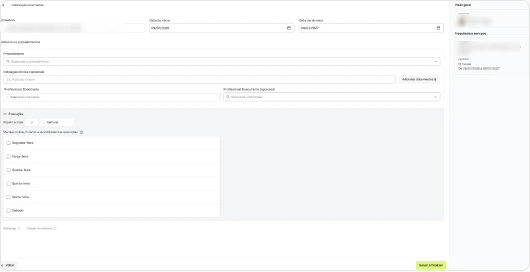
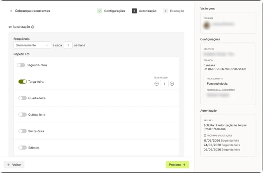
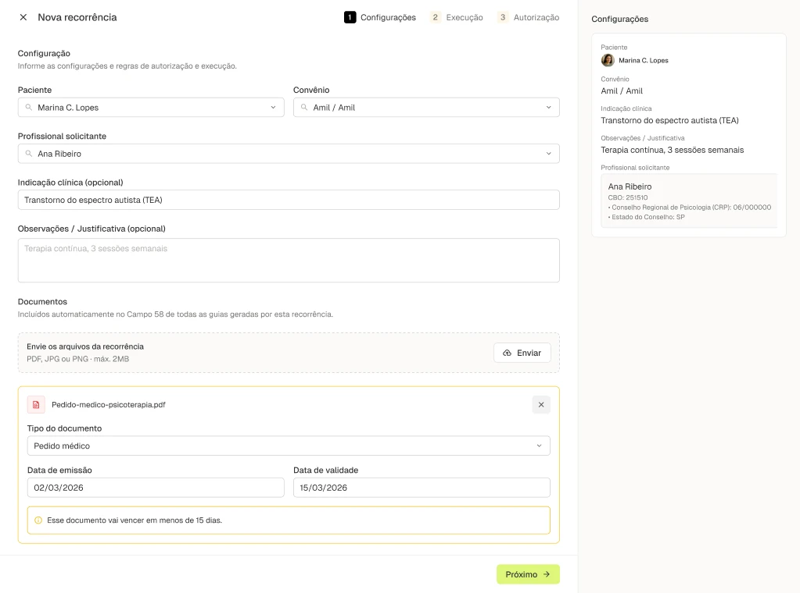
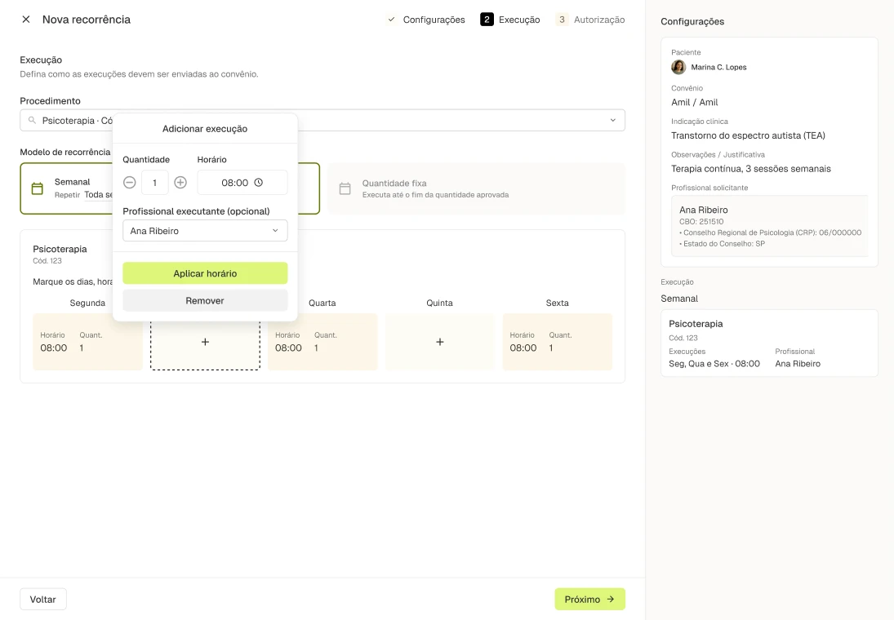
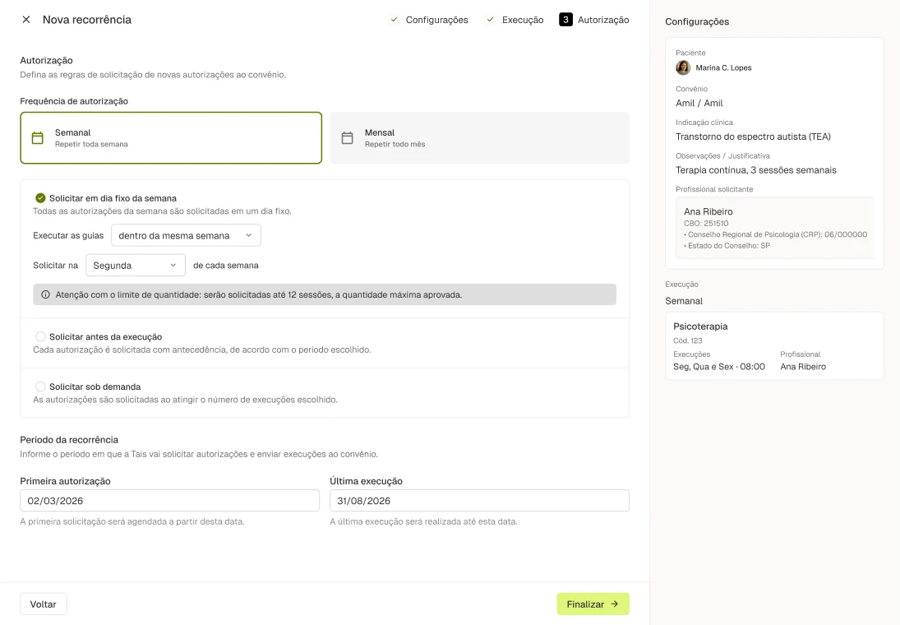
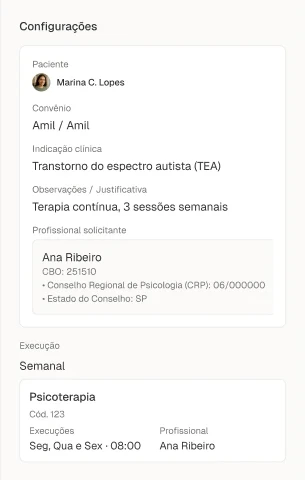
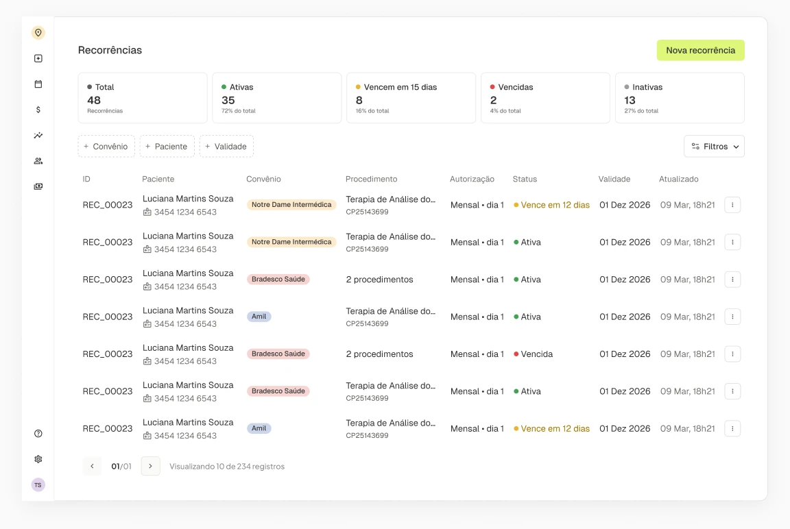
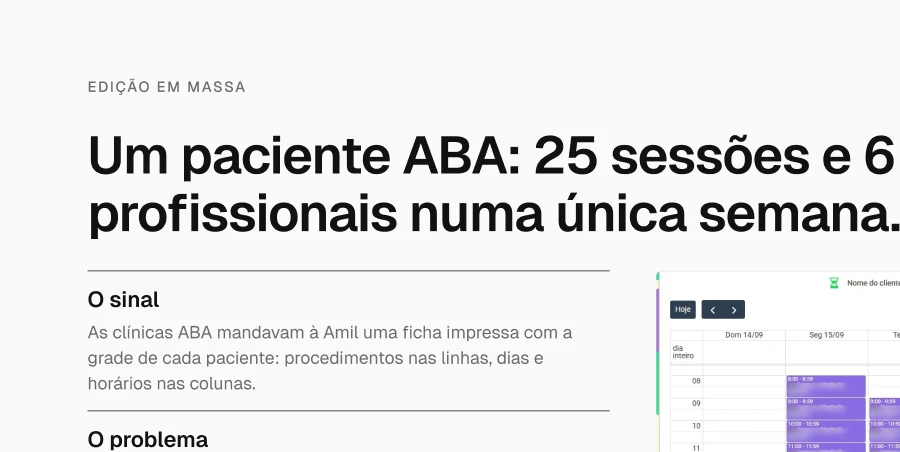
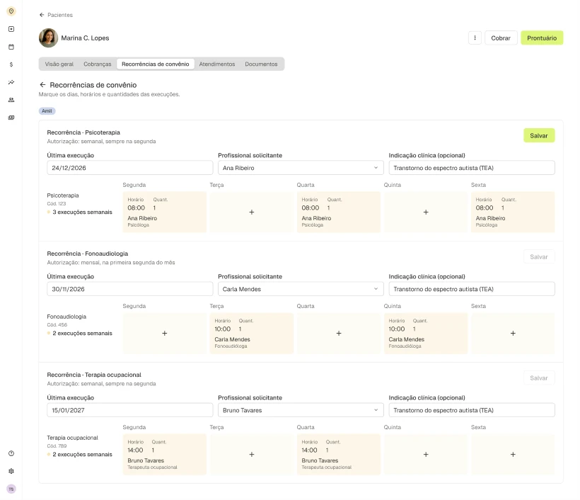

Tivita · Healthtech e fincare · 2026
Recorrências de convênio
Como desenhei a configuração de um agente que opera convênios: a clínica configura uma vez, e a Tais executa sozinha por meses.
- Papel
- Primeiro designer do time: discovery, UX/UI e design system
- Com quem
- Produto, engenharia e clínicas de terapia ABA em São Paulo
- Entrega
- Criação em três etapas, painel de conferência, gestão e edição em massa
- Processo
- V1 no ar para validar, iteração com clínicas e redesenho

Contexto
A Tais é a agente de convênios da Tivita. Ela emite guias, solicita autorizações e envia tudo às operadoras, sem depender da equipe da clínica.
A Tivita é uma healthtech e fincare para clínicas de pequeno e médio porte: agenda, prontuário, faturamento de convênios e pagamentos.
Na implantação, o time da Tivita personaliza a Tais com a clínica. Depois disso, é pela recorrência que a própria clínica diz o que solicitar, para quem, em que ritmo e com qual regra. A recorrência é o que ensina a Tais a agir.
Fui o primeiro designer do time e cuidei de discovery, UX/UI e design system de ponta a ponta, junto de produto e engenharia.
O problema
Configurar algo que um agente vai executar sozinho. Um erro aqui não vira um erro: vira uma série deles.
-
Guia gerada errada vira glosa
Se a configuração estiver errada, a Tais repete o erro em todas as guias da recorrência, e o convênio não paga.
-
Fora do padrão vira recusa
Cada convênio tem a sua regra: dia a dia, semanal ou mensal. Pedir fora dela é ter a autorização negada.
-
O desafio de design
Criar um fluxo em que a clínica configure uma vez, com segurança, e consiga conferir tudo antes de entregar para a Tais.
Discovery: observar antes de perguntar
Shadowing em clínicas de São Paulo. Acompanhei recepção e faturistas no dia a dia, para ver quem faz o quê e onde o processo quebra.
Estudo do padrão TISS com IA. Usei os documentos oficiais da ANS no NotebookLM para entender guias de consulta, SP/SADT e lotes antes de desenhar.
Jornada atual
Oito etapas, cinco papéis e ferramentas soltas entre elas.
-
01
Agendamento
Recepção
Agenda do sistema, WhatsApp, telefone
Onde quebraPaciente ABA tem várias sessões por semana, com profissionais diferentes.
-
02
Verificação de convênio
Recepção
Cartão do convênio, TISS, portais
-
03
Autorização prévia
Recepção e convênio
Portais específicos de cada operadora
Onde quebraCada convênio tem sua regra. Fora dela, recusa.
A Tais assume
-
04
Atendimento
Profissional de saúde
Prontuário eletrônico
Onde quebraCada execução pede prova: a clínica tirava print no portal, sessão por sessão.
-
05
Emissão da guia
Secretária ou faturista
Planilhas, sistema, preenchimento manual
Onde quebraUm erro de preenchimento se repete em todas as guias.
A Tais assume
-
06
Envio do lote
Faturista
Portais ou XML via TISS
A Tais assume
-
07
Glosas e recursos
Faturista
Excel, e-mails, ligações
Onde quebraO erro aparece só aqui, já como retrabalho.
-
08
Conciliação e relatórios
Financeiro
Planilhas ou software
Fonte: mapeamento da jornada feito no discovery. A recorrência é o que permite à Tais assumir as etapas 03, 05 e 06.
A V1 foi ao ar para validar rápido
Da apresentação direto para o produto. Em startup, colocar no ar é o jeito mais rápido de validar. E validou: as clínicas queriam automatizar a recorrência.
O uso real mostrou o que confundia. Data, horário, quantidade e regra do convênio ficavam no mesmo lugar. Configurações erradas viravam chamados no suporte.
Iterar antes de redesenhar. Separei em etapas e testei controles por dia. Cada versão mostrou com mais clareza o que precisava ficar separado.


Mapa da solução
Separar o que nunca muda do que muda toda semana. E conferir tudo antes de entregar à Tais.
A clínica configura · recepção, supervisor clínico e psicólogos
- 1ConfiguraçõesO que não muda: paciente, convênio, profissional, pedido médico.
- 2ExecuçãoA rotina: dias, horários e profissionais.
- 3AutorizaçãoA regra do convênio: quando e como solicitar.
Painel de conferência acompanha as três etapas
A Tais executa · sozinha, por meses
O faturista acompanha · nos lotes
No dia a dia, a gestão mostra status e validade de cada recorrência, e a edição em massa ajusta dias, horários e profissionais de todas as recorrências do paciente. A rotina ajustada volta para a Tais sem refazer a configuração.
Etapa 1 · Configurações
O que não muda fica de um lado só
O que já existe não se digita de novo. Ao escolher o paciente, os convênios e documentos do cadastro dele já aparecem. A clínica seleciona, não redigita.
Travas antes do erro. O tipo do documento é obrigatório, e o sistema avisa quando a validade vence em menos de 15 dias.
Painel de conferência sempre visível. O resumo à direita acompanha cada etapa. É ali que a clínica confere o que a Tais vai executar.
Decisão
Por que etapas, e não um formulário só
A primeira versão tinha tudo numa tela e gerava configuração errada. Em etapas, cada decisão vem com o contexto de que precisa.

Etapa 2 · Execução
A rotina do paciente vira um calendário
Visão de semana, não de formulário. É assim que recepção e supervisor clínico já pensam a agenda: segunda, quarta e sexta às 8h.
Cada sessão é um clique na grade. O popover abre sobre o dia escolhido, só com quantidade, horário e profissional executante. Remover fica ao lado de aplicar, para corrigir um dia sem refazer a grade.
Semanas específicas. A recorrência semanal pode repetir toda semana ou a cada 2, 3 ou 4 semanas.
Decisão
Grade semanal, e não lista de datas
A recorrência vale por meses. A semana é a unidade que recepção e supervisor clínico já usam para montar a agenda.
Decisão
Popover, e não modal
O modal esconde a semana. No popover, a pessoa edita um dia vendo os outros e percebe conflito na hora.

Etapa 3 · Autorização
A regra do convênio é configurada uma vez
Semanal ou mensal. Semanal: solicita sempre no mesmo dia, para a semana inteira. Mensal: uma vez por mês, num dia específico.
Limite à vista. O alerta mostra quantas sessões serão solicitadas frente à quantidade aprovada pelo convênio.
Período definido. Primeira autorização e última execução delimitam até quando a Tais trabalha.
Decisão
Cards lado a lado, e não um select
Semanal e mensal mudam o resto da etapa. Ver as duas antes de escolher ajuda a casar com a regra do convênio.

Conferência
Antes de entregar à Tais, tudo passa pelo painel de conferência
O painel lateral fica fixo da configuração à autorização, com paciente, convênio, indicação, profissional, execução e regra de autorização num só lugar. A clínica nunca perde de vista o que já preencheu.
Decisão
Painel fixo, e não uma revisão no final
Erro visto na etapa em que nasce custa menos que erro achado no resumo. E a Tais repete a instrução por meses.

Gestão
Depois de criadas, as recorrências são acompanhadas numa lista
Status em primeiro plano. Ativas, vencendo em 15 dias, vencidas e inativas.
Validade da autorização. Quem configura vê o que precisa renovar antes de virar glosa.

Edição em massa
Um paciente ABA: 25 sessões e 6 profissionais numa única semana.
O sinal. As clínicas ABA mandavam à Amil uma ficha impressa com a grade de cada paciente: procedimentos nas linhas, dias e horários nas colunas.
O problema. Um paciente ABA tem vários procedimentos em paralelo. Mudar um horário obrigava a abrir recorrência por recorrência.
A decisão. Levar a grade para o perfil do paciente. A regra de autorização fica na recorrência; dias, horários e profissionais se editam em massa.


Todas as recorrências da paciente numa grade só
Mesmo modelo da ficha. Procedimentos nas linhas, dias nas colunas. A clínica reconhece a grade que já preenchia no papel.
Salva por recorrência. Cada bloco salva separado, e o botão só acende quando algo mudou. A regra de autorização não muda aqui.
Decisão
No perfil do paciente, e não em cada recorrência
No ABA, a mudança costuma ser de rotina, não de regra. Horário, quantidade e profissional se editam direto na célula, tudo junto.
Resultado e aprendizados
A clínica passou a configurar sozinha.
O que mudou
- Autonomia: as clínicas passaram a montar as próprias recorrências, sem depender do time Tivita para configurar
- Gestão num só lugar, sem alternar entre o portal da operadora, o calendário e o Excel
- Configuração feita uma vez, sem retrabalho semanal
Observado no uso com as clínicas, ainda sem número medido.
Como eu mediria
- % de recorrências criadas pela própria clínica, sem apoio do time Tivita
- % de guias glosadas ou solicitações recusadas por erro de configuração
- Chamados de suporte sobre recorrência
Aprendizados
- Separar o que não muda do que muda simplificou mais do que qualquer ajuste de tela
- Aprender o domínio (TISS) antes de desenhar evitou soluções genéricas
- Quando um agente executa, conferir antes faz parte da solução, não é um passo extra
Todas as telas deste case usam dados fictícios. Fotos e agenda de clínicas foram anonimizadas.
Contato
Gostou do que viu? Vamos conversar.